Експерти франкфуртської виставки Heimtextil під керівництвом дизайн-бюро FranklinTill розбиралися в колірній палітрі і текстильних трендах. П'ять формулювань звучать так:
Нам пропонують використовувати відтінки червоного і синього, щоб створювати «енергоефективну» з точки зору кольору середу і додати балансу інтенсивному і надмірно урбанізованому способу життя. Relax / Recharge - повне занурення в колір - він на стінах, стелі, підлоги і меблів. Комбінуємо різні відтінки одного спектра, використовуємо омбре і градієнти. Колір здатний впливати на наш настрій і емоції - порушувати чи заспокоювати, надихати або розслабляти. Причому, всупереч поширеним стереотипам, відомо, що синій може зарядити енергією, а червоний - допомогти відпочити.
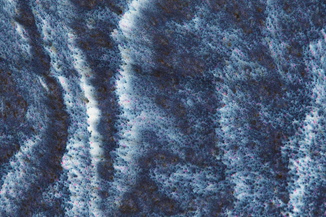 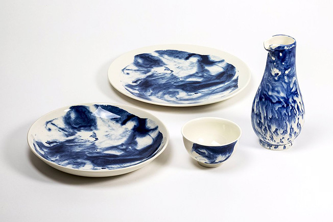 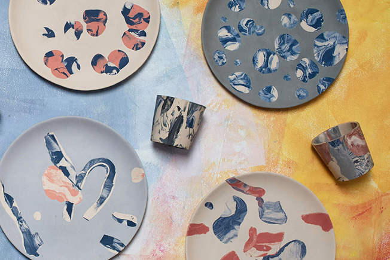Головний відтінок інтер'єрів в дусі Perfect Imperfection - індиго, одна з найстаріших фарб в світі. Поверхні і фактури - зі слідами кисті, видимими стежками, в дусі японської філософії wabi-sabi з її естетикою простоти і недосконалості. Візерунки і принти - навіяні історичними зразками. Сама тканина - функціональна і довговічна, як саржа, з якої шиють спецодяг.
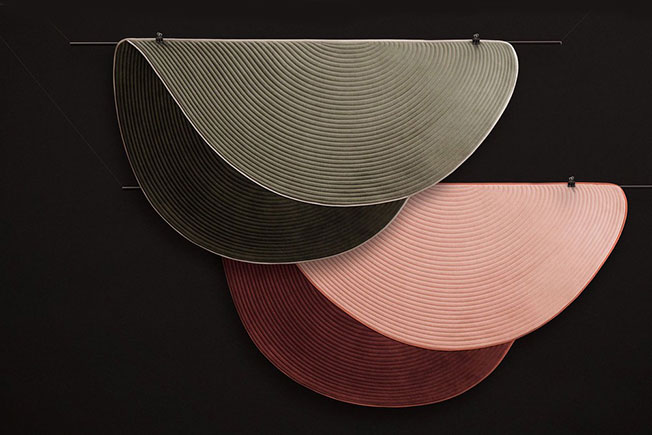 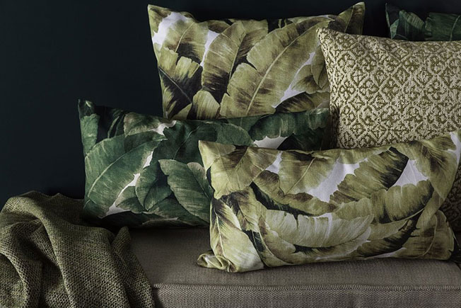 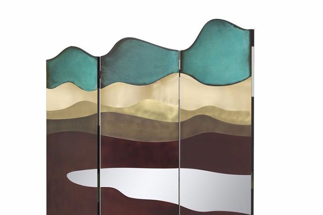Ставка робиться на всі відтінки зеленого, які розбавляють відтінками курній троянди - вони додадуть тепла і затишку люксовим зеленим тканинам. Цифровий спосіб життя все далі віддаляє нас від природи. Щоб заповнити дефіцит, дизайнери створюють Urban Oasis - притулку від сірих міських пейзажів. Предмети наслідують рослинам і природним ландшафтам - переймають форми і палітру.
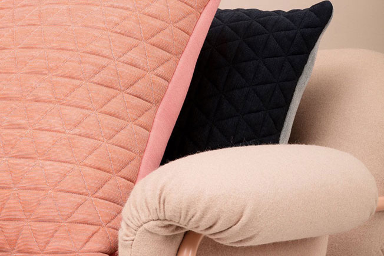 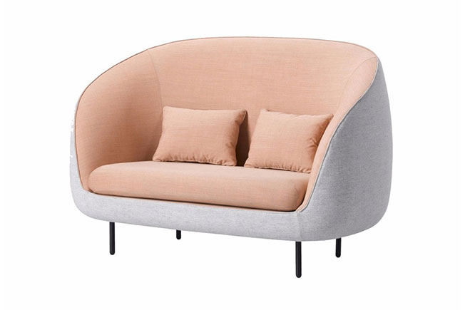 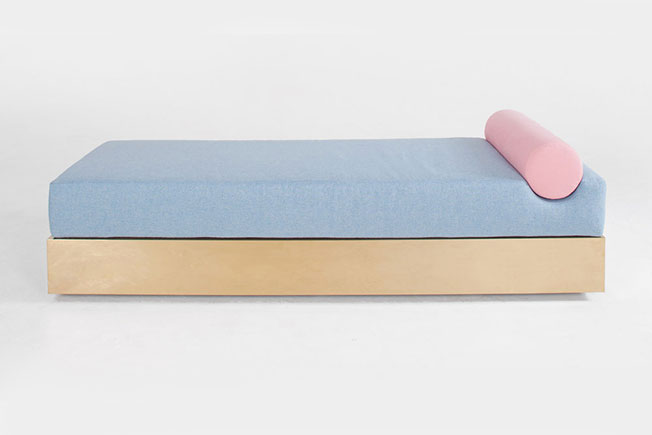В тренді прості і елегантні рішення, які не вийдуть з моди через сезон. В епоху Soft Minimal - урбанізації та брак місця люди намагаються обходитися меншим: не купують зайвого, позбавляються від непотрібного для того, щоб не захаращувати невеликі квартири. Тканини - багатофункціональні і адаптуються. Їх легко взяти з собою, щоб створити відчуття дому на новому місці. Моделі без декору і продумані комбінації матеріалів.
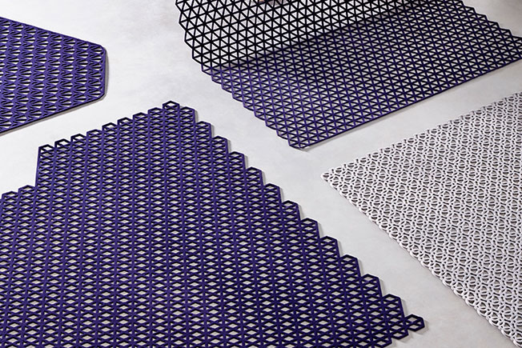 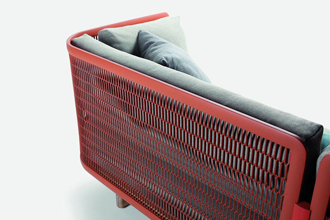 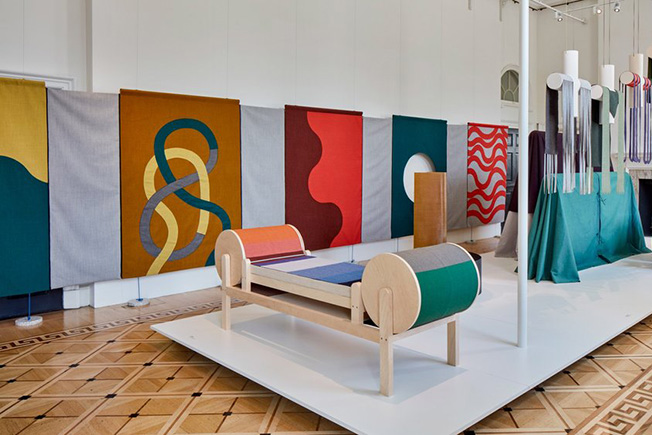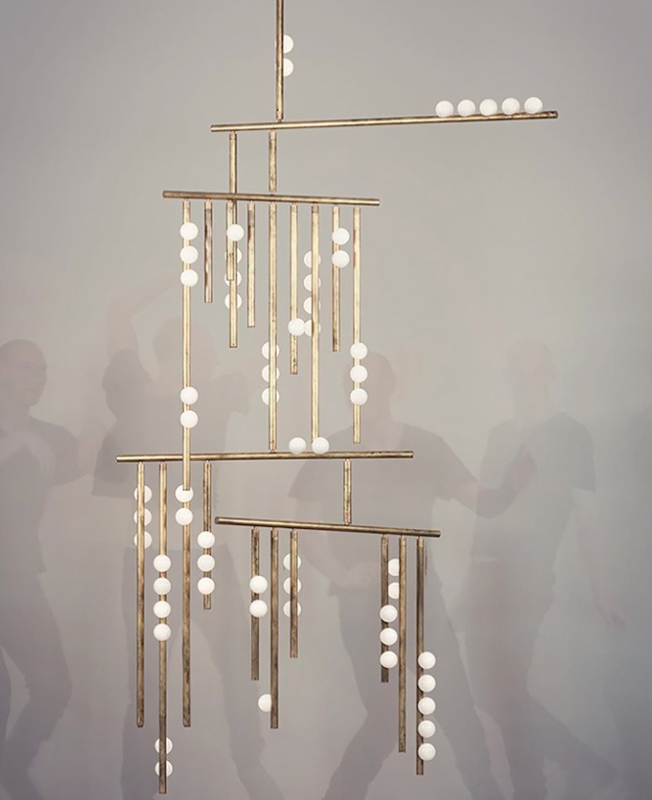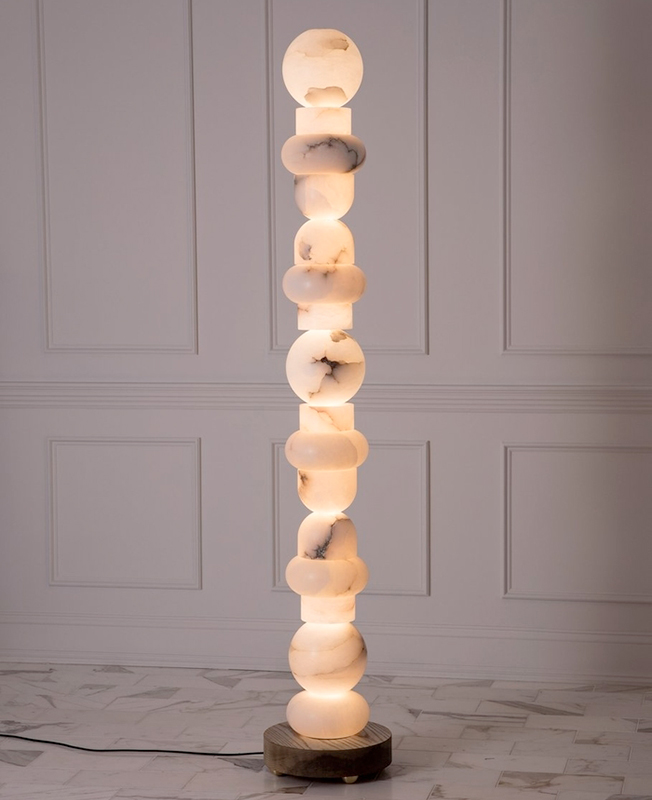Світильник Alabaster Totem 16, диз. Allied Maker. Торшер-тотем демонструє красу матеріалу, популярного в античності. Конструкція підкреслює його напівпрозорість, створює делікатне сяйво.Світильник Drop, диз. Ліндсі Ейдельмана. Основа - латунні стрижні, плафони - видувні скляні кулі. «Я хотіла кинути собі виклик, - каже дизайнер. І знайти дикий, енергійний драйв через цей процес, граючи з формами ». Ніжні, спокійні кольори підходять до будь-якого інтер`єру. Не звичні форми підкреслюють іхню витонченість і багатокоштовність.
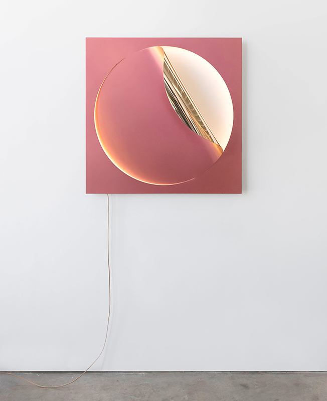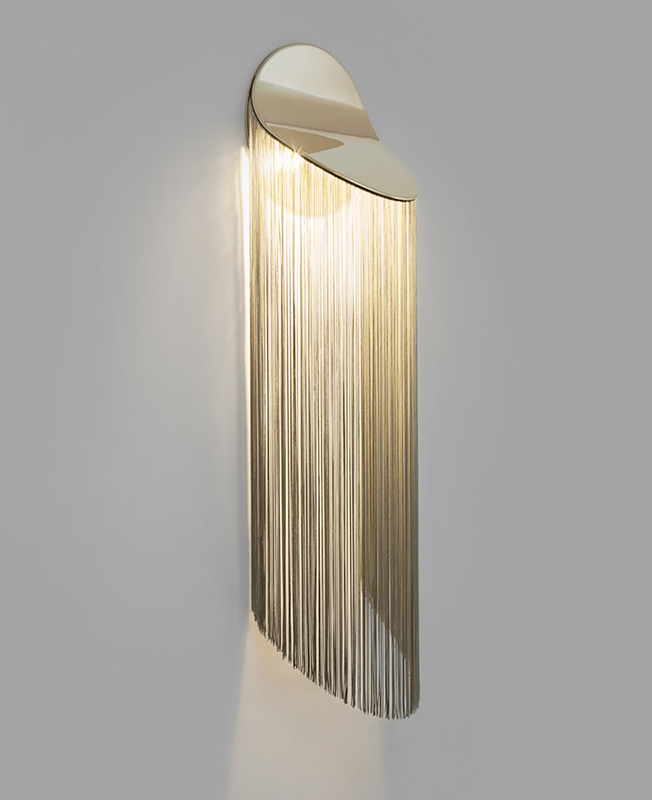
Світильник Oracle, диз. Джулія Даулт і Крістофер Стюарт. Модель з відігнутим краєм виконана з полірованої бронзи, покритою перламутровою фарбою.Світильник Cé Wall, D'Armes. Лаконічні лінії, характерні для робіт бренду, додали декоративності. Метал з'єднали з бахромою з віскози, що створює «розкішну атмосферу».
Oригінальні речі ручної роботи без використання механізованих чи автоматизованих технологій.
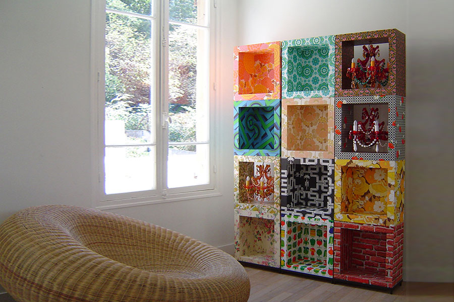 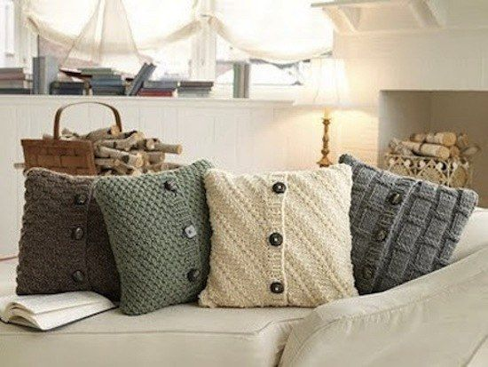 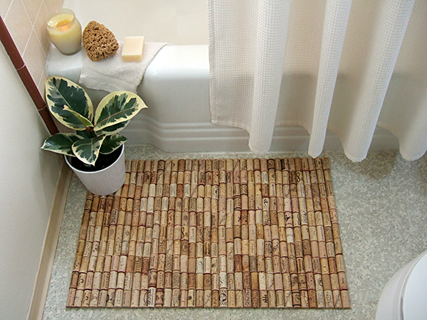 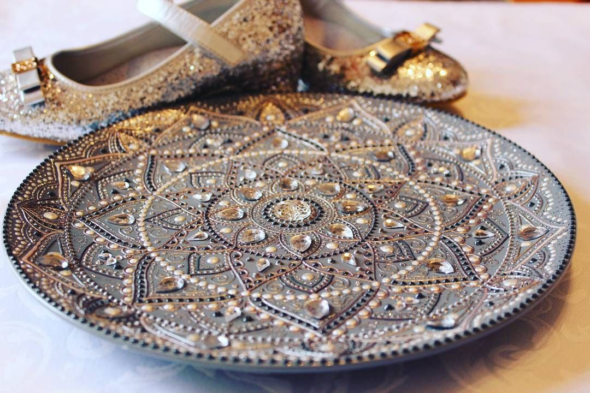